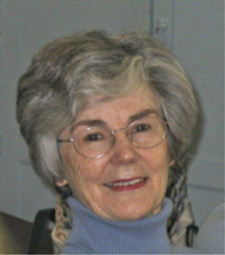
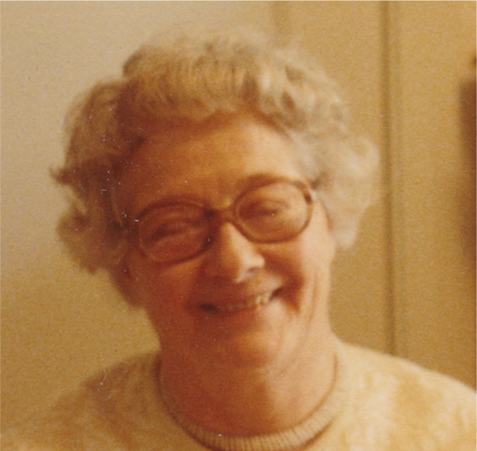

-1-MasterItem.svg)
Stories of Westminster United Church & its People / Page
187
Table
of Contents
items to Europe, Korea, Angola, and to small Northern communities in norther
Manitoba, and locally to the Xmas cheer board, Stella Ave Mission and as close
to
home as Mulvey School.
Recently, knitting became the activity of choice for many volunteers, working at
home and in church. They have continued to produce mitts, scarves etc. for the
Christmas season mitten tree. Another group of knitters was formed in 2005 to
produce prayer shawls.
A few historic names have been recorded of the women taking part in this
activity over the years. One person, Mrs. James McKenzie set a record in 1966
when she turned in 39 pairs of men’s socks — at the age of 99! Another, Mrs.
Dorothy Russell was the leader of the group in 1990 but has been a quilter since
1955, a service record of 35 years. Names of participants which might resonate
with some Westminster familieQuilters 1 copys to this day were Ruby Storey,
Emma McIvor, Eleanor Connolly, Alma MacFarlane, Jessie Bragg, Jessie Riddell,
Barb Duval, Nancy Defoe, Lorna Esdale, Kay Flood, Carol McBride, Marjorie
Robers,
Winnie Christie, Sonya Wright (top) and more recently Grace Aoki (centre).
I encourage all of you to take a look at the quilts framed and hanging in the
washrooms at the back of the Church. The larger piece is The Lorna Waddington
Quilt, and dates from the 1930s, a gift at that time to Lorna (Esdale)
Waddington
(bottom). Lorna passed it on to the women of the Westminster United Church
Quilting group who used these antique pieced blocks to create a quilt to hang in
the narthex
of the Church. The quilt was hung on Thursday, January 18, 2007.
In 1978, the United Church’s new Division of Mission in Canada (DMC) initiated a study into
the UCWs across Canada who were struggling with the structure set in 1962 and
with other issues.
The study recommended that it would be beneficial for Conference presidents to
meet regularly
to discuss issues, concerns, and projects. The gathering was to be called a
consultation, with no
administrative or decision-making authority but Conference presidents continued
to meet for many
Westminster’
s
Women of NOte

